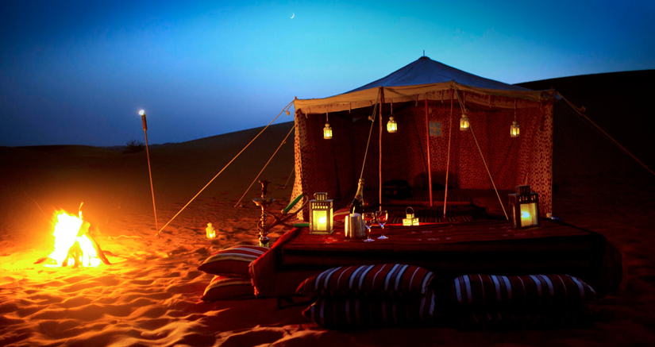
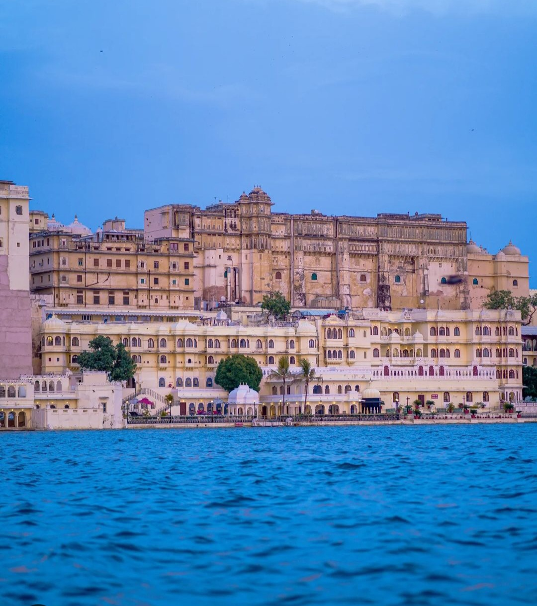
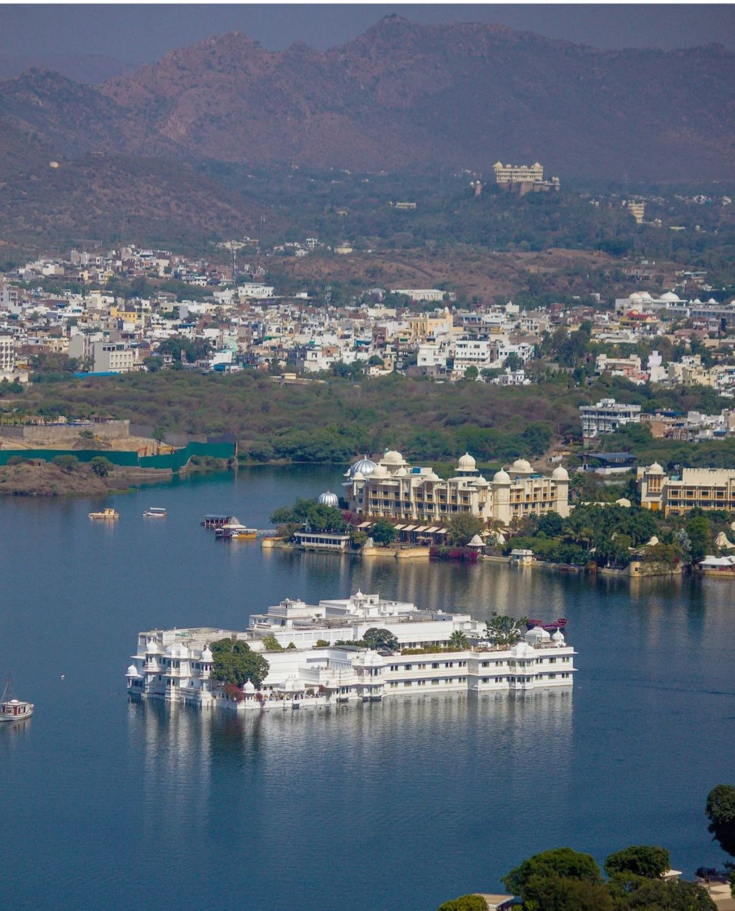

aisalmer (Jaisal+Mer) also known as city of Golden fort & Thar desert is bygone era town in the great Indian desert located at a distance of 285km from Jodhpur and 330km from Bikaner making an ideal desert triangle.
Are you planning a trip to Jaisalmer? The great India desert 'Thar' is just 45 km from Jaisalmer is the best place for camel safari and desert camping in Rajasthan.
Thar Desert (located in western Rajasthan mainly around Jaisalmer) is an arid region, the temperature here is mostly dry & high (April to September) and the best months for desert safari is certainly from October to March as its pleasant during the day time and not very cold at nights. Best timings for camel safari is during the afternoon-sunset from 4:30pm onwards till sunset.
When you imagine about visit to Rajasthan the top three things comes-in the forts & palaces, Tigers, and camels at the sand dunes. Jaisalmer offers a chance to escape the big city's chaos and let you dive deep in history, folk culture and unique desert landscape to experience the way people live.
If you’re planing for camel safari with overnight camping, the Khuri desert and Sam dunes (bit more touristic) are ideal desert locations not far from Jaisalmer town (approx 41-46 KM).
Out in the desert you’ll be able to watch the best sunset over the vast Thar desert with a hot cup of freshly brewed chai tea. At Jaisalmer you’ll get to try adventure Jeep safari or hop on the back of one humped camel and share 1000 stories around campfire.
As the sun begins to set the sky turns in multi coloured turben and the desert camp into an open air planetarium with just the crackle of the fire and the call of desert foxes the only soundtrack.

PLACE TO VISIT
Discover the enchanting beauty of Rajasthan, where history, culture, and adventure come together. Explore majestic forts, vibrant bazaars, and tranquil palaces. Marvel at the stunning desert landscapes and experience the warm hospitality of this royal land. Whether you're riding camels across golden dunes or savoring traditional Rajasthani cuisine, every moment in Rajasthan is a step into a timeless, magical journey. Visit Rajasthan and create unforgettable memories in the heart of India.


Contact-us
Welcome to Rajasthan Dream Tours, your gateway to the regal splendor of India's most vibrant state. We specialize in crafting unforgettable journeys through Rajasthan's majestic forts, serene palaces, and golden deserts. Our expertly curated tours offer a perfect blend of culture, adventure, and luxury. Whether you're looking to explore the bustling bazaars of Jaipur, ride camels in Jaisalmer, or unwind in the tranquil lakes of Udaipur, we ensure a seamless and memorable experience. Join us and let Rajasthan captivate your heart and soul.